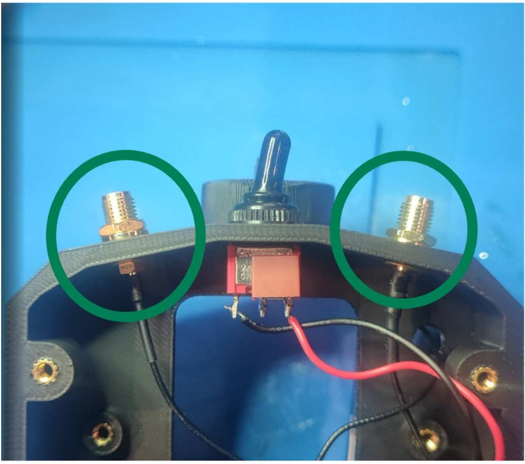

Optional TPU seals may be used.
Additional sealing may be added with:
⚠ No waterproof or IP rating is claimed.
All external connectors must be installed before electronics are mounted.
Orientation Standard (Mandatory)
For all assembled nodes:
